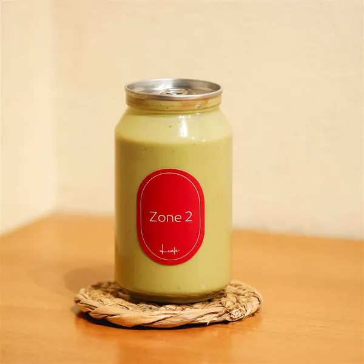
زون ۲
شیک پروتئینی موز، ماچا و کره بادامزمینی با شیر نارگیل.
۶۱۰شیکها و میانوعدههای پروتئینی، مغذی و سیرکننده.

شیک پروتئینی موز، ماچا و کره بادامزمینی با شیر نارگیل.
۶۱۰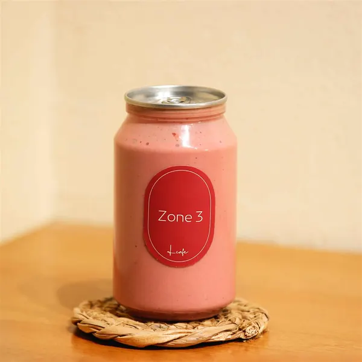
شیک پروتئینی موز، چغندر و کره بادامزمینی با شیر بادام.
۵۵۰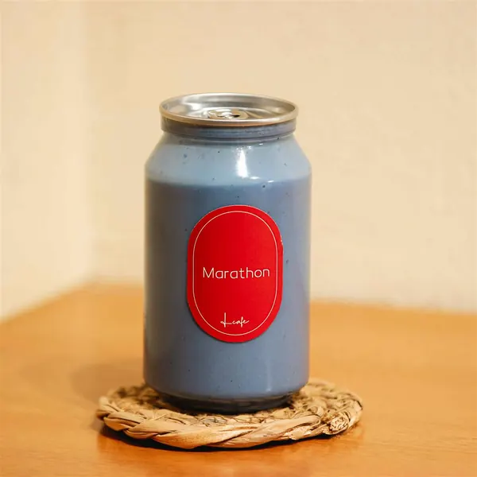
شیک پروتئینی موز، اسپرولینا و کره بادامزمینی با شیر نارگیل.
۶۹۰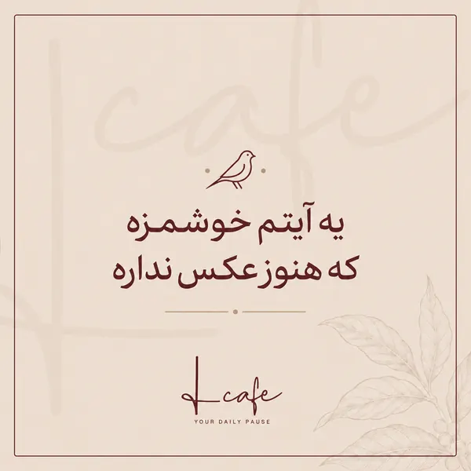
نان تست با آووکادو و پسته.
۷۳۰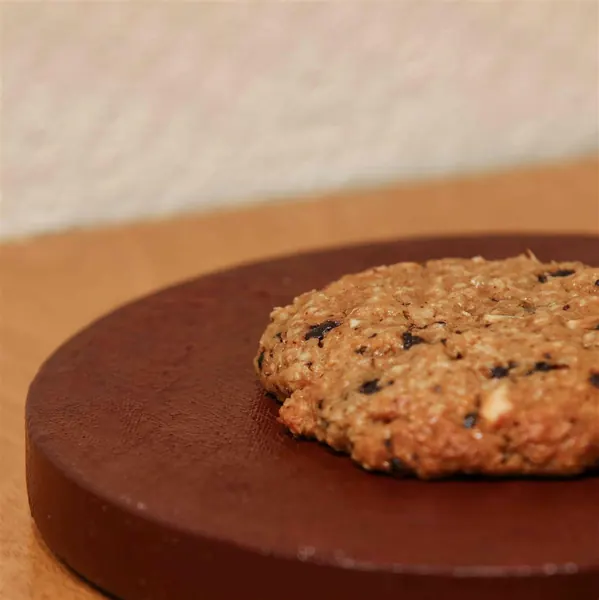
کوکی جو، شیره انگور و کره بادامزمینی؛ بدون آرد و شکر سفید.
۲۲۰ماست پروتئینی با گرانولا، موز و سس بری.
۴۰۰ترکیبی سبک و سیرکننده بر پایه دانه چیا و مواد تازه.
۳۳۰از اسپرسوی کلاسیک تا ترکیبهای گرم و امضادار بر پایه قهوه.
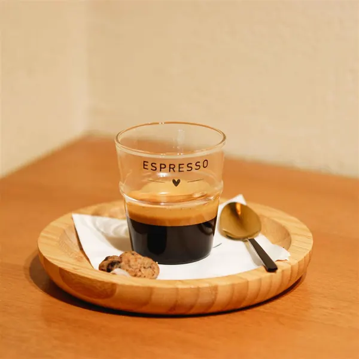
بلندی از عربیکا و روبوستا با بادی سنگین و طعمیاد شکلاتی.
۲۱۵اسپرسوی عربیکا با بافت نرم، تلخی متعادل و رایحه ظریف.
۲۲۵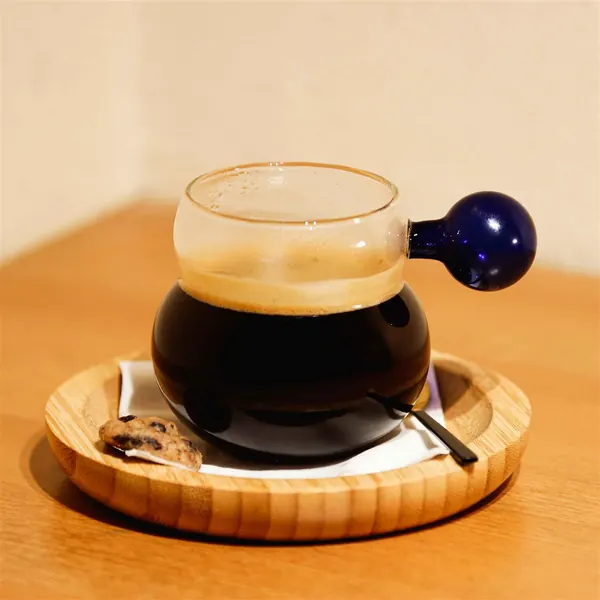
اسپرسو و آب داغ؛ شفاف، سبک و قهوهمحور.
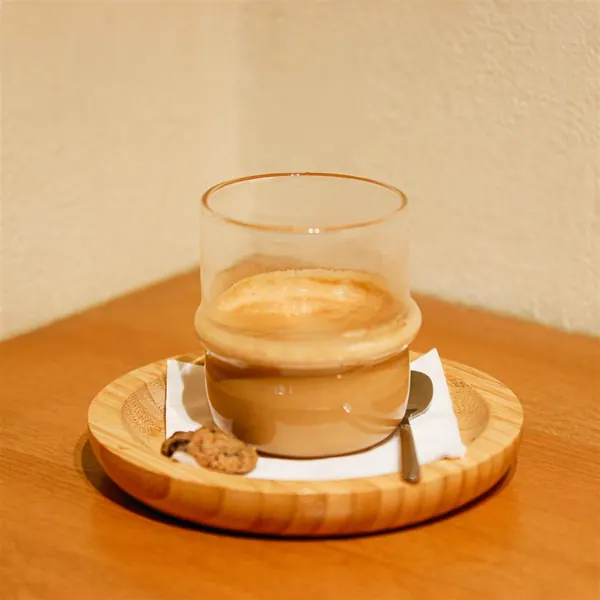
اسپرسو با مقدار کمی شیر گرم؛ نرم و قهوهمحور.
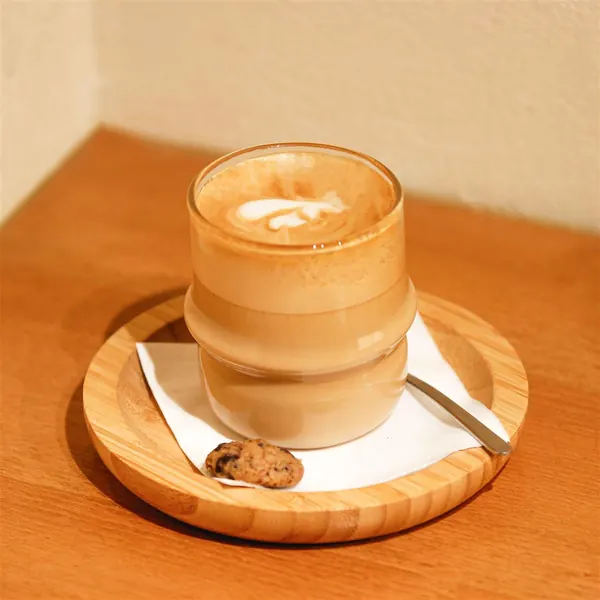
ریسترتو و میکروفوم ظریف؛ غلیظ و ابریشمی.
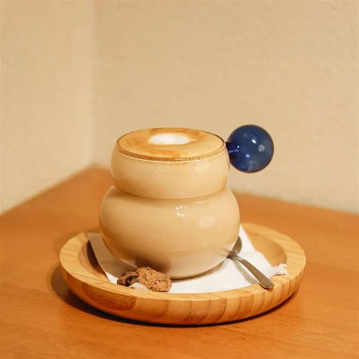
اسپرسو، شیر گرم و فوم مخملی با حضور پررنگتر قهوه.
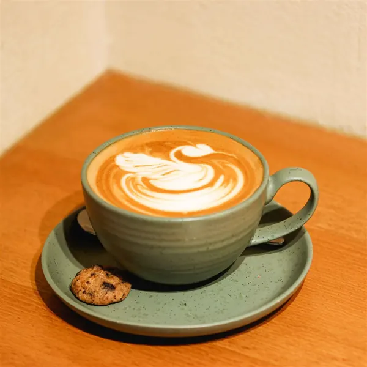
اسپرسو و شیر گرم با میکروفوم نرم و ابریشمی.
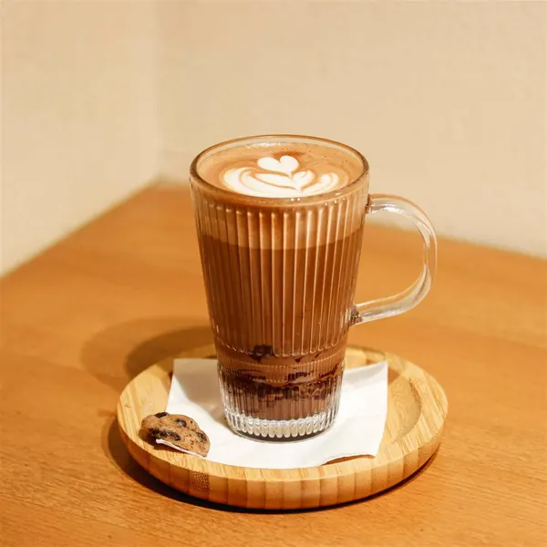
اسپرسو، شکلات بلژیکی و شیر گرم.
اسپرسو عربیکا، شیر و سس پسته الکافه.
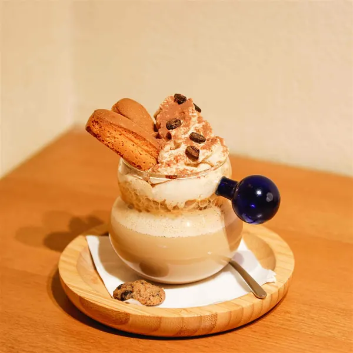
اسپرسو، وانیل، شیر و خامه با لیدیفینگر و شکلات.
۴۰۰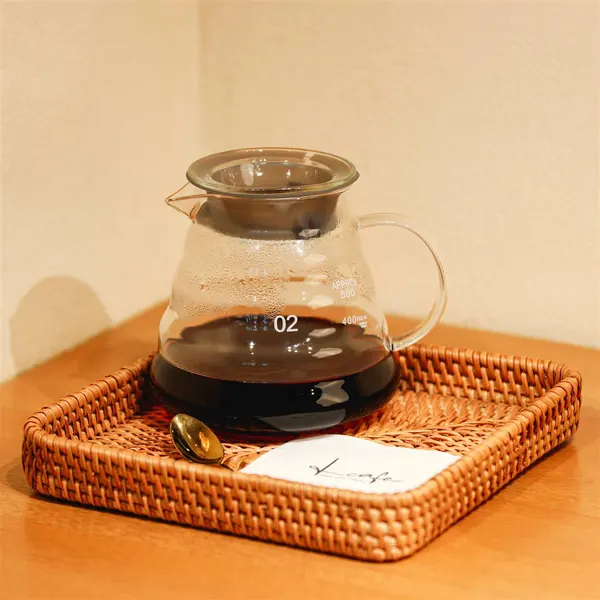
کلمبیای تکخاستگاه با رایحه گلی و طعمیادهای میوهای.
۵۰۰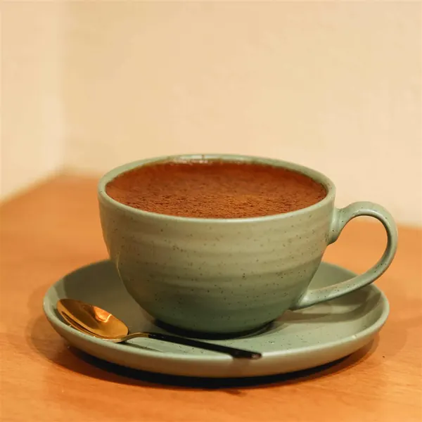
قهوهای غلیظ با آسیاب بسیار ریز و سرو سنتی.
۲۳۵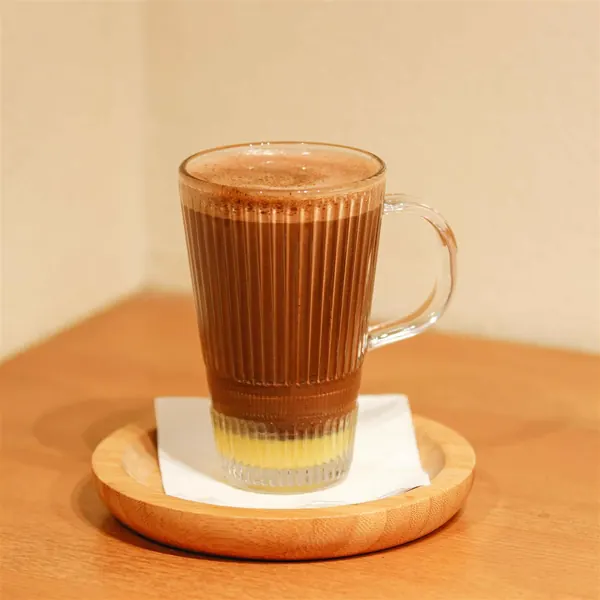
قهوه، شیر، هل و سس زعفران الکافه.
۳۹۰قهوههای سرد و خنک؛ از آیس آمریکانو تا کلدبرو و اسپنیش لاته.
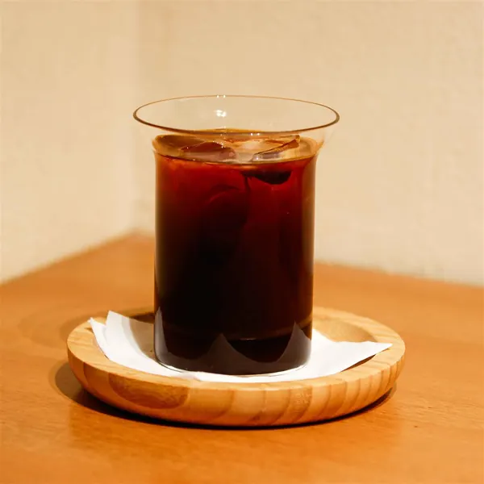
اسپرسوی انتخابی شما با آب سرد و یخ.
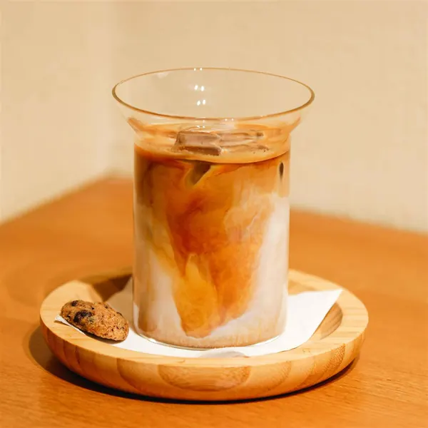
اسپرسوی انتخابی شما با شیر سرد و یخ.
قهوه و شکلات در ترکیبی سرد با یخ.
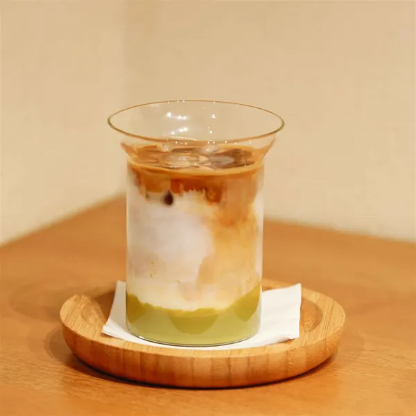
اسپرسو عربیکا، شیر، سس پسته الکافه و یخ.
۴۴۵اسپرسو عربیکا، شیر، سس زعفران الکافه و یخ.
۴۱۵قهوه با عصارهگیری سرد و طولانی؛ نرم و کمتلخ.
۳۵۰نسخه سرد پرشین کافی با طعم پسته و یخ.
۴۹۰نوشیدنیهای غلیظ، یخی و کرمی با طعمهای دسرگونه.
فراپه یخی و کرمی قهوه با کارامل نمکی.
۳۷۰فراپه یخی و کرمی با طعم عمیق ارده.
۳۷۰ژلاتوی وانیلی دستساز با شکلات مخصوص الکافه.
۴۲۰ژلاتوی وانیلی دستساز با کرم بیسکویت لوتوس.
۴۲۰نوشیدنیهای لایهای و کرمی با فوم نرم و طعمهای امضادار.
نوشیدنی لایهای پسته با فوم نرم و کرمی.
۴۳۰نوشیدنی کرمی کوکی با حضور ملایم اسپرسو.
۴۳۰نوشیدنی لایهای زعفران با فوم نرم و کرمی.
۴۳۰چای، دمنوش و نوشیدنیهای گرم برای سلیقههای مختلف.
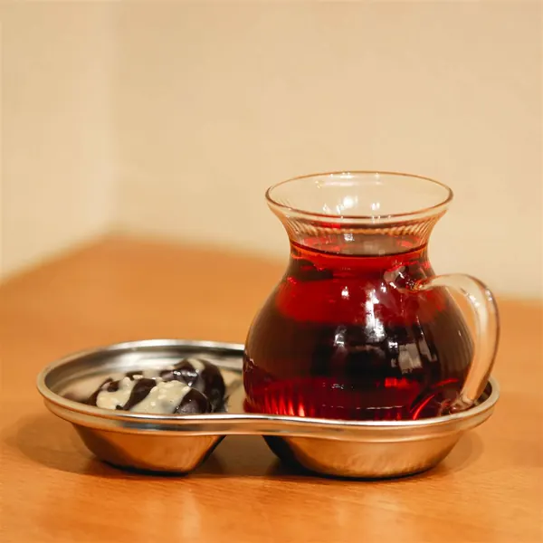
چای سیاه با انتخاب عطر زعفران، هل یا دارچین.
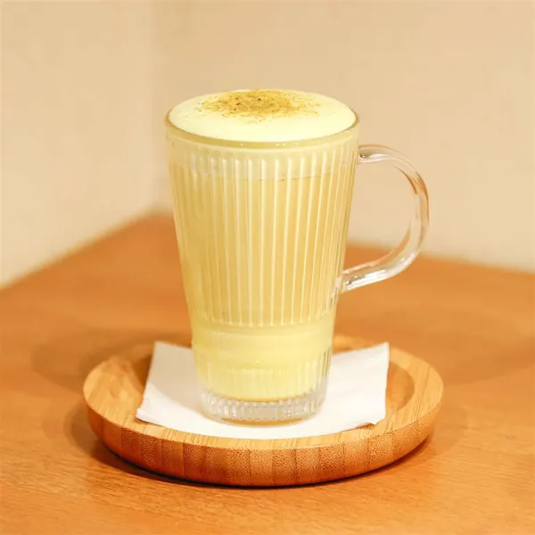
چای با شیر و ادویههای گرم؛ غلیظ و معطر.
۲۷۰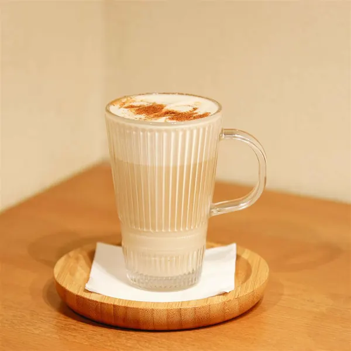
شیر، هل، زنجبیل، میخک و دارچین.
۲۷۰ماچای ژاپنی و شیر؛ بدون شیرینی افزوده.
۳۲۰ماچای ژاپنی، شیر و سس پسته الکافه.
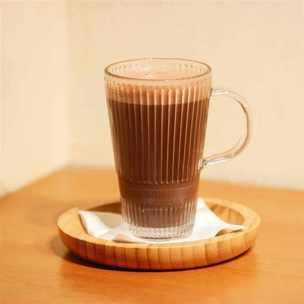
شیر گرم و ترکیب هاتچاکلت الکافه؛ غلیظ و شکلاتی.
۳۴۰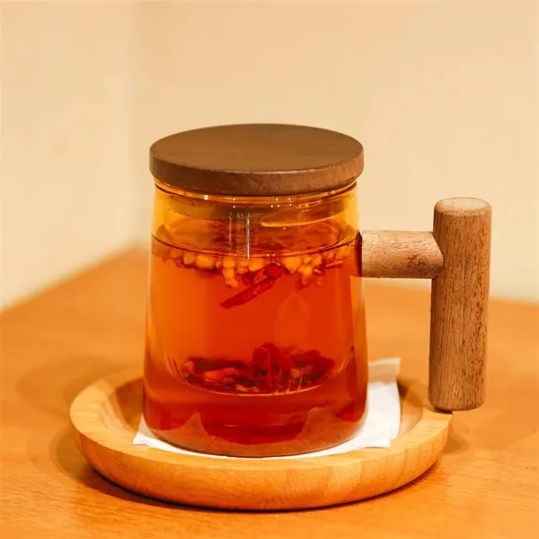
ترکیب گرم سیب، به و دارچین.
۲۰۰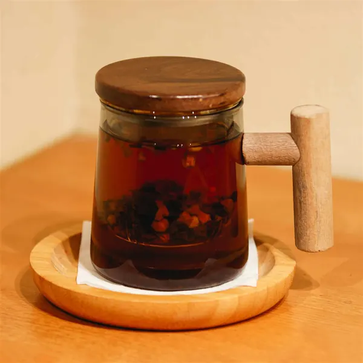
چای سیاه پررنگ با هلو.
۲۰۰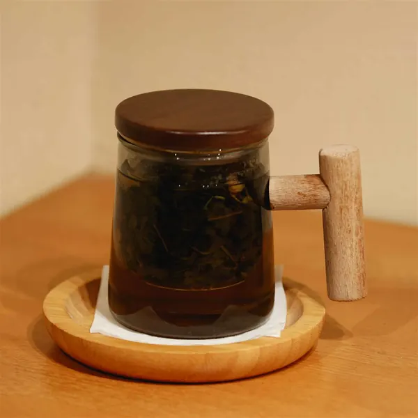
چای سبز و گل یاس؛ سبک و گلی.
۲۰۰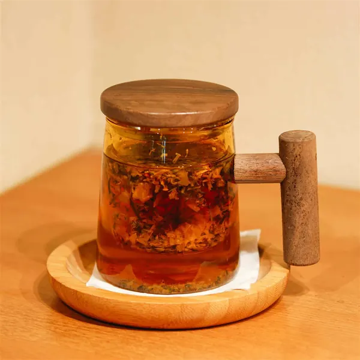
بابونه، گل محمدی و لوندر؛ لطیف و گلی.
۲۰۰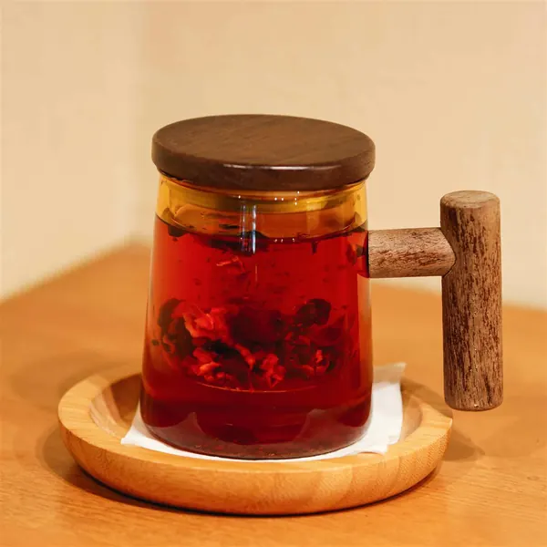
کاسکارا و میکس بری خشک؛ میوهای و کمی ترش.
۲۸۰ترکیبهای خنک و تازه بر پایه میوه، مرکبات و سودا.
لیمو و سودا روی یخ؛ ترش و تازه.
۲۸۰نعناع، لیمو و سودا روی یخ.
۲۸۰زنجبیل، لایم و سودا؛ تازه و کمی تند.
۲۶۰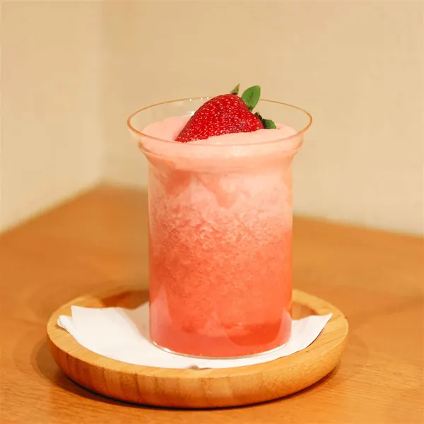
توتفرنگی و آناناس تازه؛ یخی، غلیظ و استوایی.
۳۵۰شات عصاره زنجبیل و لیمو؛ تند و ترش.
۲۶۰زنجبیل، چای ترش و توتفرنگی؛ تند و میوهای.
۲۶۰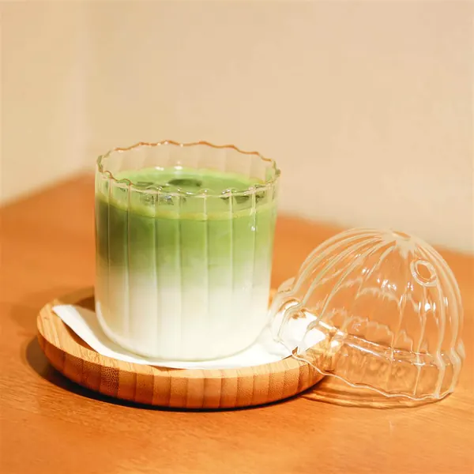
ماچای ژاپنی، شیر و یخ؛ بدون شیرینی افزوده.
۳۴۰ماچای ژاپنی، شیر، سس پسته الکافه و یخ.
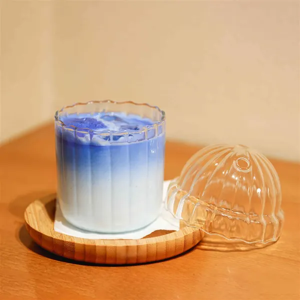
شیر، اسپرولینای آبی و یخ؛ بدون شیرینی افزوده.
۳۳۰شیر، اسپرولینای آبی، سس پسته الکافه و یخ.
نوشیدنی سرد شکلاتی با یخ.
۳۸۰ترکیبهای سرد و سبک چای و میوه با طعمی شفاف و تازه. میوه تازه، سودا و کمی عسل؛ سبک، گازدار و طراوتبخش.
چای سیاه سرد با طعم و رایحه هلو.
۳۵۰ترکیب سرد سیب، به و دارچین.
۳۵۰انبه و شاهتوت با سودا و اندکی عسل.
۳۲۰توتفرنگی و گیلاس با سودا و اندکی عسل.
۳۲۰زنجبیل و ریحان ایتالیایی با سودا و اندکی عسل.
۳۲۰ژلاتوی وانیلی دستساز الکافه و ترکیبهای ویژه آن.
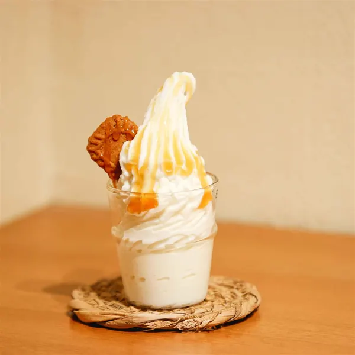
ژلاتوی وانیلی دستساز الکافه با سس کارامل.
۲۰۰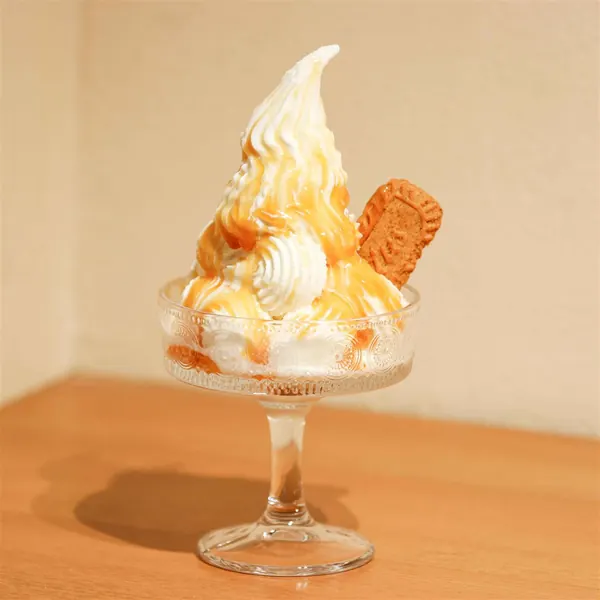
ژلاتوی وانیلی دستساز الکافه با سس کارامل.
۳۴۰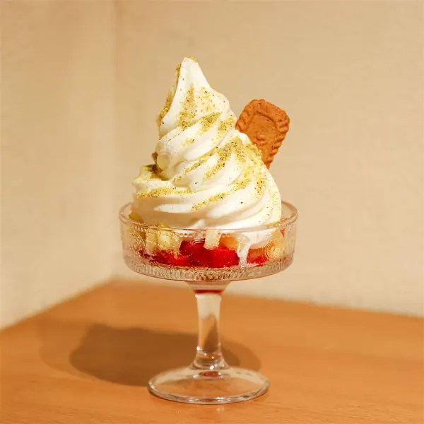
ژلاتوی وانیلی با میوه فصل و پودر پسته.
۴۸۰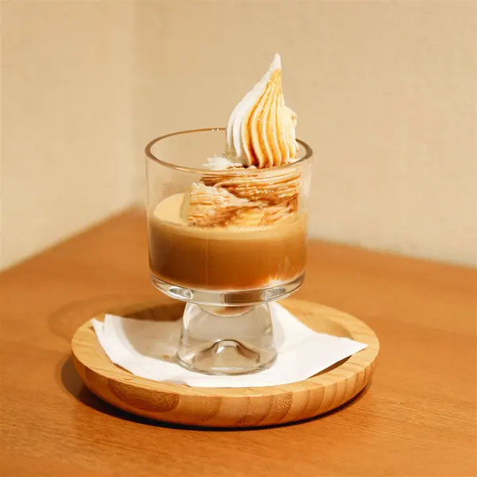
ژلاتوی وانیلی دستساز در کنار اسپرسو عربیکا.
۳۳۰کیکها، دسرها و کروسانهای تازه برای کنار قهوه یا بهتنهایی.
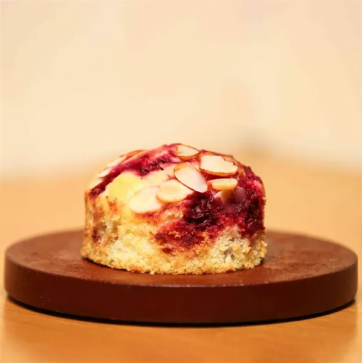
کیک آلبالو با کرم پنیر و پرک بادام.
۳۲۰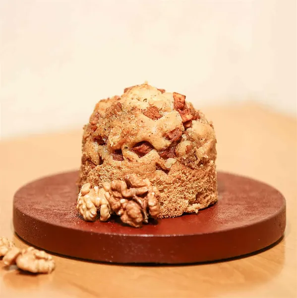
سیب، گردو و شکر قهوهای با لایه کرامبل ترد.
۳۴۰کیک هویج با گردو، دارچین و جوز هندی.
۳۰۰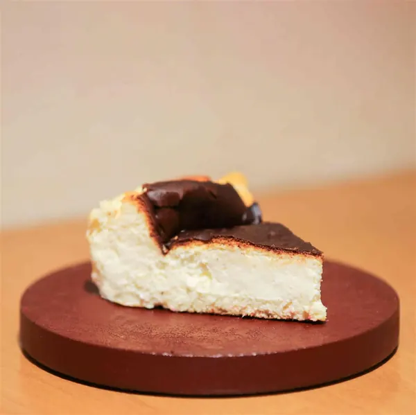
چیزکیک نرم و کرمی با رویه کاراملی.
۳۵۰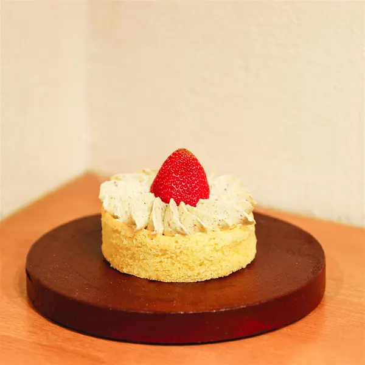
تارت پسته با سس بری و خمیر ترد.
۳۹۰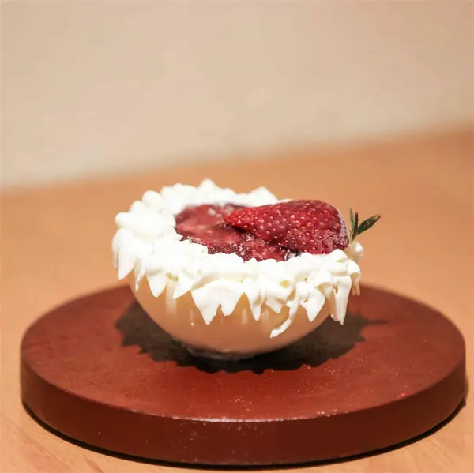
کیک با کرم پنیر، سس بری و وانیل طبیعی.
۳۸۰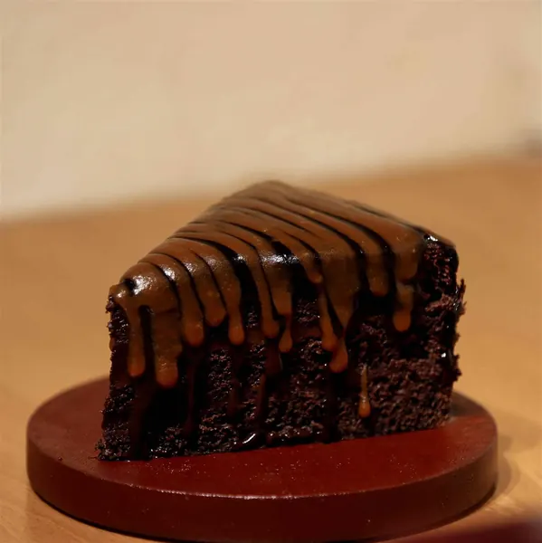
کیک دارکچاکلت با کارامل و اسپرسو.
۴۰۰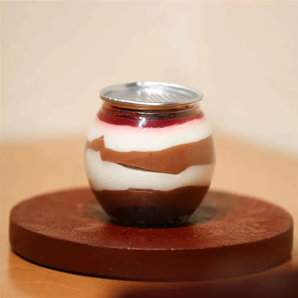
کیک شکلاتی لایهای با خامه و آلبالو.
۴۲۰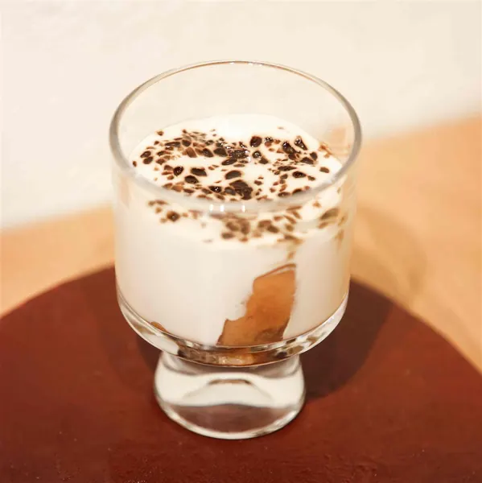
لیدیفینگر آغشته به اسپرسو با کرم پنیر.
۳۳۰دسری لطیف با محوریت بادام و طعمی مغزی.
۴۰۰کروسان کرهای با لایههای سبک و پوسته ترد.
۲۴۰کروسان کرهای و لایهای با مغز شکلات.
۳۰۰کروسان لایهای در کنار پنیر.
۳۷۰کروسان لایهای با کرم بادامزمینی.
۳۰۰صبحانهها، ساندویچهای گرم و سالادهای تازه و سیرکننده.
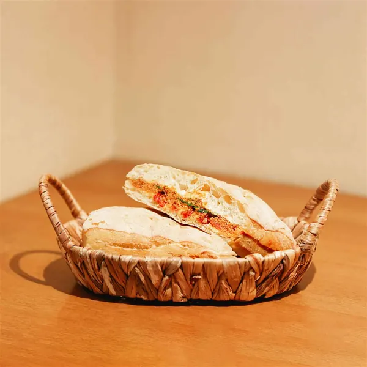
تخممرغ همزده، پنیر، ریحان ایتالیایی و گوجه طعمدار.
۳۵۰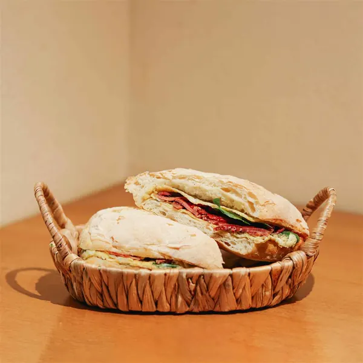
چاباتا با تخممرغ، بیکن، بلوچیز و اسفناج.
۷۶۰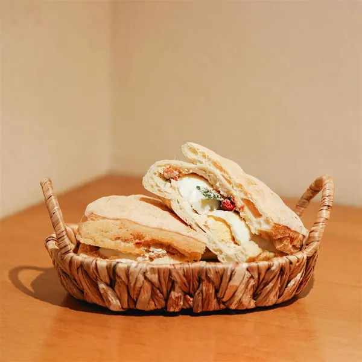
چاباتا با تخممرغ، دیپ پنیر، گوجه و سبزیجات معطر.
۳۳۰کروسان با پنیر طعمدار، گوجه خشک و روکولا.
۳۷۰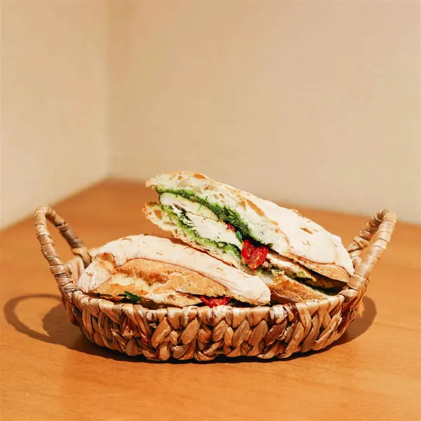
چاباتا با مرغ گریلشده و دیپ پستو.
۵۸۰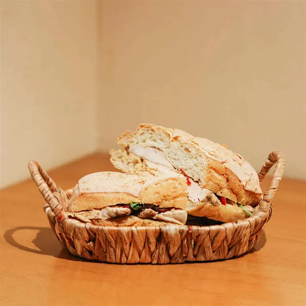
چاباتا با مرغ گریلشده و دیپ حمص.
۵۸۰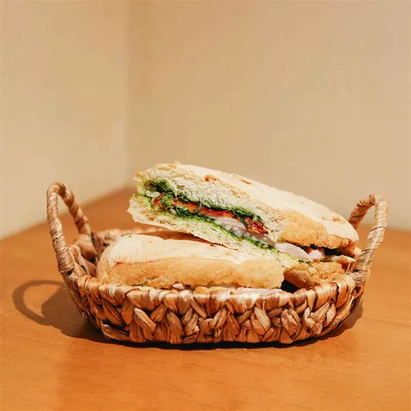
چاباتا با بوقلمون و دیپ پستو.
۶۰۰کاهوی فرانسوی، مرغ گریلشده، سبزیجات و پارمسان.
۶۳۰انتخابهای اضافه برای شخصیسازی نوشیدنی شما.